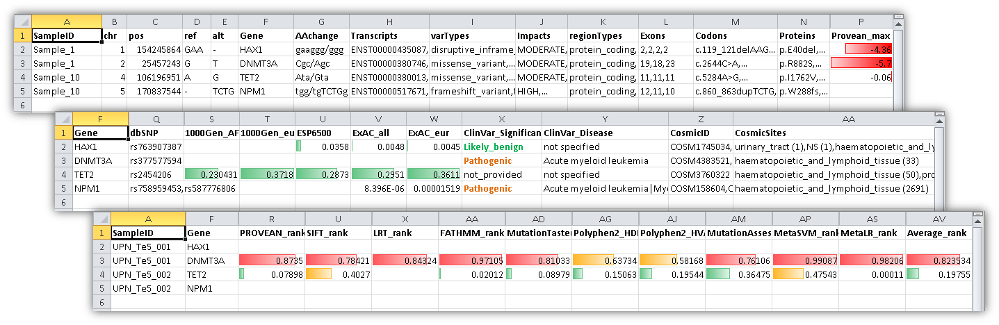
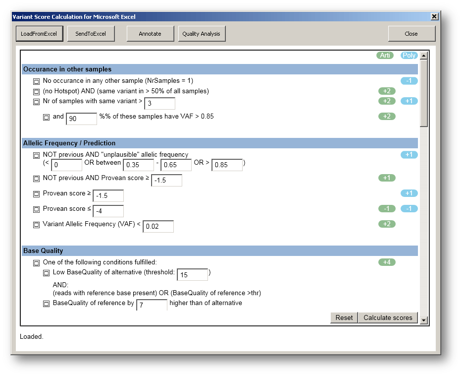

We provide a tool for automated annotation and score calculation for human genetic variants.
It is available as
There is also an interactive Excel-Tool to generate the FilterScheme available here.
Documentation:
For using the software, it is critical, that your variant table has columns named "chr", "pos", "ref", "alt" and (optionally) "SampleID". They must be named this way (case-sensititve).
For Standalone tool:
- Start the online tool OR download and extract(!) the zip-file to a folder on your PC, then start the Annotator app
- Load a variant list (as csv file), by selecting the file. It should be displayed in table form afterwards.
For Excel add-in:
- Install the Excel add-in (Windows only, administrator privileges needed)
- Open a variant list in Excel
- Click on "Variant Annotator", then "Show variant annotation form" to start the app.
For R:
- Just download the R file and look at the usage example at the end of the Annotator.R file.
Usage:
- Click on "Annotate" button to retrieve comprehensive annotation information for your variants (currently GrCh37 only).
- Click on "Quality Analysis" button to calculate the read counts for each variant from the source bam file. The bam-files must be named like <SampleID>.bam and be placed together in a single folder. Also a reference genome (fasta file) is needed for this purpose.
Integrated quality analysis works only, if you are using (a) Excel add-in or (b) Windows standalone app or (c) Microsoft Internet Explorer with ActiveX enabled. If not, use the included QualityTool manually (java QualityTool) on your csv list.
- Click on "Load filter scheme" to load your own custom filter scheme or "Calculate scores" to apply the filters and calculate Artifact and Polymorhphism scores for each variant.
Annotation example:

Filter scheme:

Currently used databases:
Authors:
Concept, generic filter scheme, annotation server, databases, annotation & filtering tools, QualityTool wrapper and Excel add-in were developed by Christian Wünsch.
Please send questions and remarks via email to the above author.
Default variant filtering scheme (appreci8) was develeped by Sarah Sandmann and adapted by Christian Wünsch.
Quality analysis (read count detection) is performed with BamEvaluator by Michael Fujarski which is included in the installation package.
© 2018 Institute of Medical Informatics, Westälische Wilhelms-Universität Münster Impressum Disclaimer Datenschutz
{kind=link}
{kind=link}